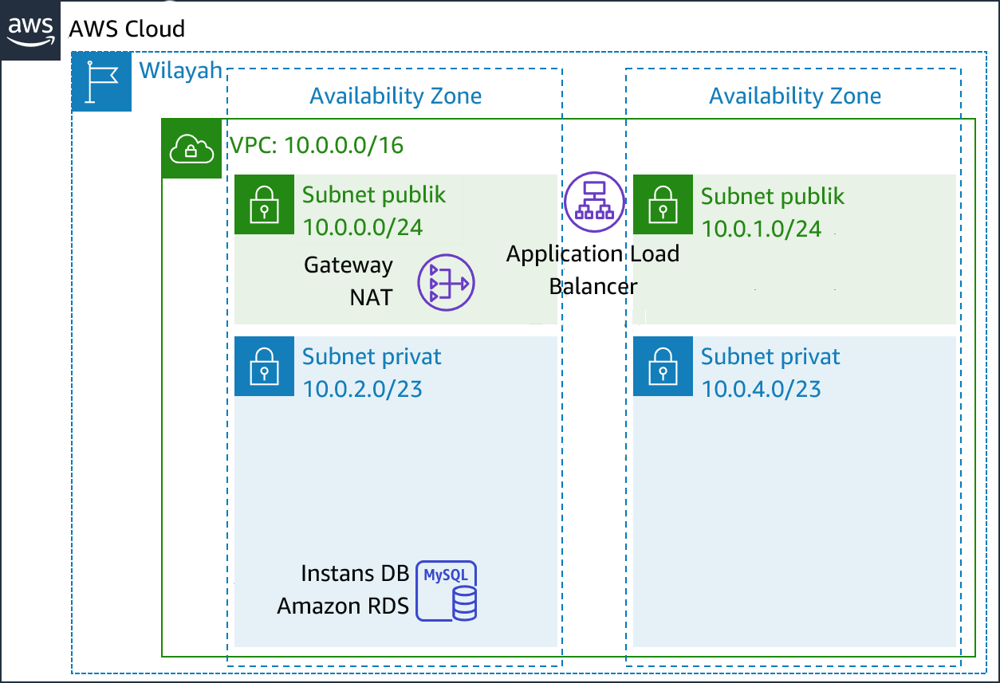

Modul 9 – Lab Terpandu: Membuat Lingkungan dengan Ketersediaan Tinggi
Gambaran umum dan tujuan lab
Sistem bisnis kritis harus di-deploy sebagai aplikasi dengan ketersediaan tinggi—yang berarti, aplikasi dapat tetap beroperasi walaupun beberapa komponennya gagal. Untuk mencapai ketersediaan tinggi di Amazon Web Services (AWS), kami merekomendasikan Anda menjalankan layanan di beberapa Availability Zone.
Banyak layanan AWS yang secara inheren memiliki ketersediaan yang tinggi, seperti penyeimbang beban. Banyak layanan AWS juga dapat dikonfigurasikan agar memiliki ketersediaan tinggi, seperti dengan men-deploy instans Amazon Elastic Compute Cloud (Amazon EC2) di beberapa Availability Zone.
Di lab ini, Anda akan mulai dengan aplikasi yang berjalan pada instans EC2 tunggal. Anda kemudian akan membuat aplikasi tersebut memiliki ketersediaan tinggi.
Setelah menyelesaikan lab ini, Anda akan mampu:
- Memeriksa virtual private cloud (VPC) yang disediakan
- Membuat Application Load Balancer
- Membuat Grup Auto Scaling
- Menguji aplikasi apakah memiliki ketersediaan tinggi
Pada akhir lab ini, arsitektur Anda akan terlihat seperti contoh berikut:

Durasi
Perlu sekitar 40 menit untuk menyelesaikan lab ini.
Pembatasan layanan AWS
Dalam lingkungan lab ini, akses ke layanan AWS dan tindakan layanan mungkin dibatasi untuk orang-orang yang diperlukan untuk menyelesaikan instruksi lab. Anda mungkin akan mengalami error jika mencoba mengakses layanan lain atau melakukan tindakan di luar yang dijelaskan di lab ini.
Mengakses Konsol Manajemen AWS
Di bagian atas instruksi ini, pilih Start Lab (Mulai Lab) untuk meluncurkan lab Anda.
Panel Start Lab (Mulai Lab) terbuka dan menampilkan status lab.
Tip: Jika Anda memerlukan lebih banyak waktu untuk menyelesaikan lab, mulai ulang pengatur waktu untuk lingkungan dengan memilih tombol Start Lab (Mulai Lab) lagi.
Tunggu hingga panel Start Lab (Mulai Lab) menampilkan pesan Lab status: ready (Status lab: siap), lalu tutup panel dengan memilih X.
Di bagian atas instruksi ini, pilih AWS.
Tindakan ini akan membuka Konsol Manajemen AWS di tab browser baru. Anda akan masuk ke sistem secara otomatis.
Tip: Jika tab browser baru tidak terbuka, banner atau ikon biasanya berada di bagian atas browser Anda dengan pesan bahwa browser Anda mencegah situs membuka jendela sembulan. Pilih banner atau ikon, lalu pilih Allow pop-ups (Izinkan sembulan).
Atur tab AWS Management Console(Konsol Manajemen AWS) agar ditampilkan bersama instruksi ini. Idealnya, Anda perlu membuka kedua tab browser secara bersamaan, sehingga Anda dapat mengikuti langkah-langkah lab dengan lebih mudah.
Jangan mengubah Wilayah kecuali secara khusus diperintahkan untuk melakukannya.
Tugas 1: Memeriksa VPC Anda
Lab ini dimulai dengan lingkungan yang sudah di-deploy melalui AWS CloudFormation. Termasuk di dalamnya:
- VPC
- Subnet publik dan privat di dua Availability Zone
- Gateway internet (tidak ditunjukkan) yang terkait dengan subnet publik
- Gateway Network Address Translation (NAT) di salah satu subnet publik
- Instans Amazon Relational Database Service (Amazon RDS) di salah satu subnet privat
Dalam tugas ini, Anda akan meninjau konfigurasi VPC yang telah dibuat untuk lab ini.
Di AWS Management Console (Konsol Manajemen AWS), pada menu Services (Layanan), pilih VPC.
Di panel navigasi kiri, di bawah Filter by VPC (Filter menurut VPC), klik kotak Select a VPC (Pilih VPC), dan pilih Lab VPC.
Pengaturan ini akan membatasi konsol untuk hanya menunjukkan sumber daya yang terkait dengan Lab VPC.
Di panel navigasi kiri, pilih Your VPCs (VPC Anda).
Di sini, Anda dapat mengakses informasi tentang Lab VPC yang dibuat untuk Anda.
Kolom CIDR tersebut memiliki nilai 10.0.0.0/16, yang artinya VPC ini berisi semua alamat IP yang dimulai dengan 10.0.x.x.
Di panel navigasi kiri, pilih Subnets (Subnet).
Di sini, Anda dapat mengakses informasi tentang Subnet Publik 1:
- Kolom VPC menunjukkan bahwa subnet ini berada di dalam Lab VPC
- Kolom IPv4 CIDR memiliki nilai 10.0.0.0/24, yang berarti bahwa subnet ini mencakup 256 alamat IP antara 10.0.0.0 dan 10.0.0.255. Lima dari alamat ini dicadangkan dan tidak dapat digunakan.
- Kolom Availability Zone mencantumkan Availability Zone tempat subnet ini berada.
Untuk menampakkan lebih banyak detail di bagian bawah halaman, pilih Public Subnet 1 (Subnet Publik 1).
Tip: Untuk menyesuaikan ukuran panel jendela bawah, Anda dapat menarik sekatnya.
Pada paruh bawah halaman, pilih tab Route Table (Tabel Rute).
Tab ini berisi detail tentang rute subnet ini:
- Entri pertama menentukan bahwa lalu lintas yang diperuntukkan berada di dalam jangkauan Classless Inter-Domain Routing (CIDR) untuk VPC (*10.0.0.0/16*) akan dirutekan di dalam VPC (* lokal*).- Entri kedua menentukan bahwa lalu lintas apa pun yang diperuntukkan bagi Internet (**0.0.0.0/0**) dirutekan ke gateway internet (*igw-*). Pengaturan ini menjadikan subnet tersebut *subnet publik*.
- Pilih tab Network ACL (ACL Jaringan).
Tab ini memiliki informasi tentang access control list jaringan (ACL jaringan) yang terkait dengan subnet tersebut. Saat ini pengaturan tersebut mengizinkan semua lalu lintas masuk dan keluar dari subnet, tetapi dapat lebih jauh dibatasi dengan menggunakan grup keamanan.
- Di panel navigasi kiri, pilih Internet Gateways (Gateway Internet).
Perhatikan bahwa gateway internet telah dihubungkan dengan Lab VPC.
- Di panel navigasi kiri, pilih Security Groups (Grup Keamanan).
- Pilih Inventory DB.
Grup keamanan ini mengontrol lalu lintas yang masuk ke basis data.
- Pada paruh bawah halaman, pilih tab Inbound Rules (Aturan Masuk).
Aturan ini mengizinkan lalu lintas masuk MySQL atau Aurora (port 3306) dari mana saja di VPC (10.0.0.0/16). Anda nantinya dapat memodifikasi pengaturan ini agar hanya menerima lalu lintas dari server aplikasi.
- Pilih tab Outbound Rules (Aturan Keluar).
Secara default, grup keamanan mengizinkan semua lalu lintas keluar. Namun, pengaturan ini dapat dimodifikasi sesuai kebutuhan.
Tugas 2: Membuat Application Load Balancer
Untuk membuat aplikasi dengan ketersediaan tinggi, praktik terbaiknya adalah meluncurkan sumber daya di beberapa Availability Zone. Availability Zone adalah pusat data (atau grup pusat data) yang terpisah secara fisik di Wilayah yang sama. Jika Anda menjalankan aplikasi di beberapa Availability Zone, Anda dapat menyediakan ketersediaan yang lebih besar jika pusat data mengalami kegagalan.
Karena aplikasi berjalan di beberapa server aplikasi, Anda akan memerlukan cara untuk mendistribusikan lalu lintas di antara server tersebut. Anda dapat mencapai tujuan ini dengan menggunakan penyeimbang beban. Penyeimbang beban juga melakukan pemeriksaan kesehatan pada instans dan hanya mengirimkan permintaan ke instans yang sehat.

- Pada menu Services (Layanan), pilih EC2.
- Pada panel navigasi kiri, pilih Load Balancers (Penyeimbang Beban) (Anda mungkin perlu menggulir ke bawah untuk menemukannya).
- Pilih Create Load Balancer (Buat Penyeimbang Beban)
Beberapa tipe penyeimbang beban akan ditampilkan. Baca deskripsi setiap tipe untuk memahami kemampuannya.
- Di bawah Application Load Balancer, pilih Create (Buat)
- Untuk Name (Nama), masukkan:
Inventory-LB - Gulir ke bawah ke bagian Availability Zones, lalu untuk VPC, pilih Lab VPC.
Kini Anda akan menentukan subnet mana yang harus digunakan oleh penyeimbang beban. Penyeimbang beban tersebut adalah penyeimbang beban publik, jadi Anda akan memilih kedua subnet publik tersebut.
- Pilih Availability Zonepertama, lalu pilih Subnet Publik yang ditampilkan.
- Pilih Availability Zone kedua, lalu pilih Subnet Publik yang ditampilkan.
Kini Anda memiliki dua subnet yang dipilih: Subnet Publik 1 dan Subnet Publik 2. (Jika tidak, kembali dan coba konfigurasi lagi.)
- Pilih Next: Configure Security Settings (Berikutnya: Konfigurasi Pengaturan Keamanan)
Peringatan akan muncul, yang menyarankan agar Anda menggunakan HTTP yang Aman (HTTPS) untuk meningkatkan keamanan. Ini adalah saran yang baik, tetapi tidak diperlukan untuk lab ini.
- Pilih Next: Configure Security Groups (Berikutnya: Konfigurasi Grup Keamanan)
Kini Anda akan membuat grup keamanan yang menerima semua lalu lintas HTTP dan HTTPS yang masuk.
- Pilih Create a new security group (Buat grup keamanan baru), lalu konfigurasikan:
- Security group name (Nama grup keamanan):
Inventory-LB - Description(Deskripsi):
Enable web access to load balancer(Mengaktifkan akses web ke penyeimbang beban)
- Konfigurasi aturan yang ada (yang sudah ada di halaman ini) dengan:
- Type (Tipe): HTTP
- Source (Sumber): Anywhere (Mana saja)
- Pilih Add Rule (Tambahkan Aturan) dan konfigurasikan:
- Tipe: HTTPS
- Source (Sumber): Anywhere (Mana saja)
Pengaturan ini akan menerima semua permintaan HTTP dan HTTPS yang masuk.
- Pilih Next: Configure Routing (Berikutnya: Konfigurasikan Perutean)
Grup target menentukan ke mana akan mengirimkan lalu lintas yang masuk ke penyeimbang beban. Application Load Balancer dapat mengirimkan lalu lintas ke beberapa grup target berdasarkan URL permintaan yang masuk. Contohnya bisa mengirim permintaan dari aplikasi seluler ke satu set server yang berbeda dari jenis permintaan lainnya. Aplikasi web Anda hanya akan menggunakan satu grup target.
- Untuk Name (Nama), masukkan:
Inventory-App - Perluas Pengaturan pemeriksaan kesehatan lanjutan.
Application Load Balancer secara otomatis melakukan pemeriksaan kesehatan di semua instans untuk memastikan bahwa instans merespons permintaan. Pengaturan default disarankan, tetapi Anda harus membuatnya sedikit lebih cepat untuk digunakan di lab ini.
- Konfigurasikan nilai-nilai berikut:
- Healthy threshold (Ambang batas sehat):
2 - Interval:
10
Pengaturan ini berarti bahwa pemeriksaan kesehatan akan dilakukan setiap 10 detik. Jika instans merespons dengan tepat dua kali berturut-turut, instans tersebut akan dianggap sehat.
- Pilih Next: Register Targets (Berikutnya: Daftarkan Target)
Target adalah instans individual yang merespons permintaan dari penyeimbang beban. Anda belum memiliki instans aplikasi web apa pun, jadi Anda bisa melewatkan langkah ini.
- Pilih Next: Review (Berikutnya: Tinjauan)
- Tinjau pengaturan, pilih Create (Buat) lalu pilih Close (Tutup)
Penyeimbang beban Anda kini akan disediakan di latar belakang. Anda tidak perlu menunggu.
Tugas 3: Membuat grup Auto Scaling
Amazon EC2 Auto Scaling adalah layanan yang dirancang untuk meluncurkan atau menghentikan instans Amazon EC2 secara otomatis berdasarkan kebijakan yang ditentukan pengguna, jadwal, dan pemeriksaan kesehatan. Layanan ini juga mendistribusikan instans secara otomatis ke beberapa Availability Zone untuk membuat aplikasi memiliki ketersediaan tinggi.
Dalam tugas ini, Anda akan membuat grup Auto Scaling yang men-deploy instans EC2 di subnet privat**Anda, yang merupakan praktik keamanan terbaik untuk deployment aplikasi. Instans di subnet privat tidak dapat diakses dari internet. Sebaliknya, pengguna akan mengirimkan permintaan ke penyeimbang beban, yang akan meneruskan permintaan tersebut ke instans Amazon EC2 di subnet privat.

Membuat AMI untuk Auto Scaling
Anda akan membuat AMI dari Web Server 1 yang sudah ada. Hal ini akan menyimpan konten disk boot sehingga instans yang baru dapat diluncurkan dengan konten yang identik.
- Dalam AWS Management Console, di menu Services (Layanan), klik EC2.
- Di panel navigasi kiri, klik Instances (Instans).
Pertama-tama, Anda akan memastikan bahwa instans sedang berjalan.
- Tunggu hingga Status Check (Pemeriksaan Status) untuk Web Server 1 (Server Web 1) menampilkan 2/2 checks passed (2/2 pemeriksaan lulus). Klik refresh (segarkan) untuk memperbarui.
Sekarang Anda akan membuat AMI berdasarkan instans ini.
- Pilih Web Server 1 (Server Web 1).
- Di menu Actions (Tindakan), klik Image (Gambar) > Create Image (Buat Gambar), lalu konfigurasikan:
- Image name:(Nama gambar:)
Web Server AMI(Server Web AMI) - Deskripsi gambar:
Lab AMI untuk Server Web
- Klik Create image (Buat gambar).
Layar konfirmasi menampilkan AMI ID (ID AMI) untuk AMI baru Anda.
- Klik Close (Tutup)
Anda akan menggunakan AMI ini saat meluncurkan grup Auto Scaling nantinya di lab.
Membuat Konfigurasi Peluncuran dan grup Auto Scaling.
Anda terlebih dahulu akan membuat konfigurasi peluncuran, yang menentukan tipe instans yang harus diluncurkan oleh Amazon EC2 Auto Scaling. Antarmukanya akan terlihat mirip dengan ketika Anda meluncurkan instans EC2. Namun, alih-alih meluncurkan sebuah instans, antarmuka ini menyimpan konfigurasi tersebut untuk digunakan nanti.
- Di panel navigasi kiri, pilih Launch Configuration (Konfigurasi Peluncuran).
- Pilih Create launch configuration (Buat konfigurasi peluncuran)
- Konfigurasikan pengaturan berikut:
Launch configuration name (Nama konfigurasi peluncuran):
Inventory-LCAmazon machine image (AMI) Pilih Web Server AMI
Instance type (Tipe instans):
- Pilih Choose instance type (Pilih tipe instans)
- Pilih t3.micro
- Pilih Choose (Pilih)
Catatan: Jika Anda telah meluncurkan lab di Region (Wilayah) us-east-1, pilih tipe instans t2.micro. Untuk menemukan Region (Wilayah), lihat di sudut kanan atas konsol Amazon EC2.
Catatan: Jika Anda menerima pesan kesalahan "Something went wrong. Please refresh and coba lagi." (Terjadi kesalahan. Refresh dan coba lagi), Anda dapat mengabaikannya dan melanjutkan latihan.
Konfigurasi tambahan
- IAM instance profile (Profil instans IAM): Pilih Inventory-App-Role
Monitoring(Pemantauan): Pilih Aktifkan pemantauan detail EC2 instance dalam CloudWatch
Fitur ini memungkinkan Auto Scaling bereaksi cepat terhadap perubahan penggunaan.
- Perluas Advanced Details (Detail Lanjutan). Di bawah User data (Data pengguna), salin dan tempel skrip ini:
xxxxxxxxxx# Install Apache Web Server and PHPyum install -y httpd mysqlamazon-linux-extras install -y php7.2# Download Lab fileswget https://aws-tc-largeobjects.s3-us-west-2.amazonaws.com/ILT-TF-200-ACACAD-20-EN/mod9-guided/scripts/inventory-app.zipunzip inventory-app.zip -d /var/www/html/# Download and install the AWS SDK for PHPwget https://github.com/aws/aws-sdk-php/releases/download/3.62.3/aws.zipunzip aws -d /var/www/html# Turn on web serverchkconfig httpd onservice httpd start- Di bawah Security groups (Grup keamanan)
- Select an existing security group (Pilih grup keamanan yang ada): Inventory-App
Anda akan menerima peringatan bahwa You will not able to connect to the instance (Anda tidak akan dapat terhubung ke instans). Anda dapat mengabaikan peringatan ini karena Anda tidak akan terhubung ke instans. Semua konfigurasi dilakukan melalui skrip data pengguna.
- Di bawah pasangan kunci (login):
- Pilih Proceed without a key pair (Lanjutkan tanpa pasangan kunci)
- Pilih I acknowledge that... (Saya menyatakan bahwa...)
- Pilih Create launch configuration (Buat konfigurasi peluncuran)
Launch configuration (Konfigurasi peluncuran) menentukan apa yang akan diluncurkan, tetapi Auto Scaling group (grup Auto Scaling) menentukan di mana akan meluncurkan sumber daya.
- Di tabel Launch configurations (Konfigurasi peluncuran), pilih Inventory-LC.
- Dari tombol Actions (Tindakan), pilih Create Auto Scaling group (Buat grup Auto Scaling)
- Masukkan nama grup Auto Scaling:
- Name (Nama):
Inventory-ASG(ASG singkatan dari Auto Scaling group)
- Pilih Next (Berikutnya)
- Di halaman Network (Jaringan), konfigurasikan
- VPC: Lab VPC
- Subnet: Pilih Private Subnet 1 (Subnet Privat 1) dan Private Subnet 2 (Subnet Privat 2)
Anda dapat mengabaikan peringatan yang menyebutkan No public IP addresses will be assigned (Tidak ada alamat IP publik yang akan ditugaskan). Instans Amazon EC2 akan diluncurkan pada subnet privat__, jadi instans tersebut tidak memerlukan alamat IP publik.
Hal ini akan meluncurkan instans EC2 di subnet privat di kedua Availability Zone tersebut.
- Pilih Next (Berikutnya)
- Di bawah Load balancing (Penyeimbangan beban):
- Pilih Enable load balancing
- Pilih Application Load Balancer or Network Load Balancer (Application Load Balancer atau Network Load Balancer)
- Choose a target group for your load balancer: (Pilih grup target untuk penyeimbang beban Anda:) Inventory-App
Pengaturan ini memerintahkan grup Auto Scaling untuk mendaftarkan instans EC2 baru sebagai bagian dari grup target Inventory-App yang telah Anda buat sebelumnya. Penyeimbang beban akan mengirimkan lalu lintas ke instans yang berada di grup target ini.
- Di bawah Pemeriksaan kesehatan:
- Pilih ELB
- Health check grace period: (Masa tenggang pemeriksaan kesehatan:) 90
- Di bawah Additional settings (Pengaturan tambahan):
- pilih Enable group metrics collection within CloudWatch (Aktifkan pengumpulan metrik grup di dalam CloudWatch)
- Pilih Next (Berikutnya)
- Di Group size (Ukuran grup), konfigurasikan:
- Desired capacity: 2 (Kapasitas yang dikehendaki: 2)
- Minimum capacity (Kapasitas minimum): 2
- Maximum capacity: (Kapasitas maksimum): 2
- Di bawah Scaling policies (Kebijakan penskalaan), pilih None (Tidak ada).
Untuk lab ini, Anda akan terus mempertahankan dua instans untuk memastikan adanya ketersediaan tinggi. Jika aplikasi tersebut diharapkan akan menerima berbagai muatan lalu lintas, Anda juga dapat membuat kebijakan penskalaan yang menentukan kapan meluncurkan atau menghentikan instans. Namun, Anda tidak perlu membuat kebijakan penskalaan untuk aplikasi Inventory di lab ini.
- Pilih Next (Berikutnya)
- Pada halaman Add notifications (Tambahkan notifikasi), pilih Next (Berikutnya). Anda tidak perlu mengonfigurasi salah satu pengaturan ini.
- Pada halaman Add tags (Tambahkan tanda), pilih Add tag (Tambahkan tanda)
- Key (Kunci):
Name(Nama) - Value (Nilai):
Inventory-App - Pilih Berikutnya
Pengaturan ini akan memberi tanda grup Auto Scaling dengan sebuah Name (Nama), yang juga akan muncul di instans EC2 yang diluncurkan oleh grup Auto Scaling. Anda akan menggunakan tanda untuk mengidentifikasi instans Amazon EC2 mana yang terkait dengan aplikasi tertentu. Anda juga dapat menambahkan tanda seperti Cost Center (Pusat Biaya) untuk mempermudah menetapkan biaya aplikasi pada file penagihan.
- Pada Review page (Halaman tinjauan):
- Pilih Create Auto Scaling group (Buat grup Auto Scaling)
Inventory-ASG akan muncul di konsol:
 (Konsol grup Auto Scaling)
(Konsol grup Auto Scaling)
Tinjauan tersebut menunjukkan bahwa:
- Grup saat ini tidak memiliki instans, tetapi ikon informasinya mengindikasikan bahwa instans sedang diluncurkan. (Arahkan kursor ke atas ikon untuk lebih jelasnya.)
- Kuantitas yang diinginkan adalah 2 instans. Amazon EC2 Auto Scaling akan mencoba meluncurkan dua instans untuk mencapai kuantitas yang diinginkan
- Min dan Max juga diatur ke 2 instans. Amazon EC2 Auto Scaling akan mencoba untuk selalu menyediakan dua instans, sekalipun terjadi kegagalan.
Aplikasi Anda akan segera berjalan di dua Availability Zone. Amazon EC2 Auto Scaling akan mempertahankan konfigurasi itu meskipun instans atau Availability Zone gagal.
Setelah satu menit, pilih Refresh (segarkan) untuk memperbarui tampilan. Hal ini akan menunjukkan bahwa 2 instans sedang berjalan.
Tugas 4: Memperbarui grup keamanan
Aplikasi yang telah Anda deploy memiliki arsitektur tiga tingkat. Sekarang Anda akan mengonfigurasi Grup Keamanan untuk memberlakukan tingkat ini:
Grup keamanan penyeimbang beban
Anda telah mengonfigurasi grup keamanan penyeimbang beban saat Anda membuat penyeimbang beban. Penyeimbang beban menerima semua lalu lintas_HTTP_ dan HTTPS
Penyeimbang beban telah dikonfigurasi untuk meneruskan permintaan yang masuk ke Grup Target. Saat Auto Scaling meluncurkan instans baru, penyeimbang beban akan menambahkan instans tersebut secara otomatis ke Grup Target.
Grup keamanan aplikasi
Grup keamanan aplikasi disediakan sebagai bagian dari pengaturan lab. Anda sekarang akan mengonfigurasinya menjadi hanya menerima lalu lintas masuk dari penyeimbang beban.
- Di panel navigasi kiri, pilih Security Groups (Grup Keamanan).
- Pilih Inventory-App.
- Pada paruh bawah halaman, pilih tab Inbound rules (Aturan masuk).
Grup keamanan saat ini kosong. Sekarang Anda akan menambahkan aturan untuk menerima lalu lintas HTTP yang masuk dari penyeimbang beban. Anda tidak perlu mengonfigurasi lalu lintas HTTPS karena penyeimbang beban telah dikonfigurasi untuk meneruskan permintaan HTTPS melalui HTTP. Praktik ini memindahkan keamanan ke penyeimbang beban, sehingga mengurangi jumlah kerja yang diperlukan oleh server aplikasi individual.
- Pilih Edit inbound rules (Edit aturan masuk).
- Pada halaman Edit inbound rules (Edit aturan masuk), pilih Add rule (Tambahkan aturan) dan konfigurasikan pengaturan ini.
Type (Tipe): HTTP
Source (Sumber):
- Klik di kotak pencarian di sebelah Custom (Kustom)
- Hapus konten saat ini
- Masukkan
sg - Dari daftar yang muncul, pilih Inventory-LB
Description (Deskripsi):
Traffic from load balancer(Lalu lintas dari penyeimbang beban)Pilih Save rules (Simpan aturan)
Server aplikasi sekarang dapat menerima lalu lintas dari penyeimbang beban. Termasuk di antaranya pemeriksaan kesehatan yang dilakukan secara otomatis oleh penyeimbang beban.
Grup keamanan basis data
Sekarang Anda akan mengonfigurasi Grup keamanan basis data menjadi hanya menerima lalu lintas yang masuk dari server aplikasi.
- Pilih Inventory-DB (dan pastikan tidak ada grup keamanan lain yang dipilih).
Aturan yang ada mengizinkan lalu lintas pada port 3306 (yang digunakan oleh MySQL) dari alamat IP mana pun di dalam VPC. Ini adalah aturan yang bagus, tetapi keamanan dapat dibatasi lebih lanjut.
- Di tab Inbound rules (Aturan masuk), pilih Edit Inbound rules (Edit aturan masuk) dan konfigurasikan pengaturan berikut:
- Klik di kotak pencarian di sebelah Custom (Kustom)
- Hapus konten saat ini
- Tipe
sg - Pilih Inventory-App dari daftar yang muncul
- Deskripsi:
Lalu lintas dari server aplikasi - Pilih Save rules (Simpan aturan)
Anda sekarang telah mengonfigurasi keamanan tiga tingkat. Setiap elemen di tingkat tersebut hanya menerima lalu lintas dari tingkat di atasnya.
Selain itu, penggunaan subnet privat berarti bahwa Anda memiliki dua pembatas keamanan antara internet dan sumber daya aplikasi Anda. Arsitektur ini sesuai dengan praktik terbaik dalam menerapkan beberapa lapisan keamanan.
Tugas 5: Menguji aplikasi
Aplikasi Anda sekarang siap diuji.
Dalam tugas ini, Anda akan mengonfirmasi bahwa aplikasi web Anda berjalan. Anda juga akan menguji bahwa aplikasi tersebut memiliki ketersediaan tinggi.
- Di panel navigasi kiri, klik Target Groups (Grup Target).
Grup instans Inventory-App akan ditampilkan.
- Pada paruh bawah halaman, pilih tab Targets (Target).
Tab ini akan menunjukkan dua target terdaftar. Kolom Status (Status) menunjukkan hasil pemeriksaan kesehatan penyeimbang beban yang dilakukan terhadap instans.
- Di area kanan atas, sesekali pilih Refresh (Segarkan) sampai Status untuk kedua instans muncul menjadi healthy (sehat).
Jika statusnya tidak berubah menjadi healthy (sehat), mintalah panduan kepada instruktur untuk mendiagnosis konfigurasi tersebut. Arahkan kursor ke ikon di kolom Status untuk mengakses informasi lebih lanjut tentang status.
Anda akan menguji aplikasi tersebut dengan menghubungkan ke penyeimbang beban, yang kemudian akan mengirimkan permintaan Anda ke salah satu instans Amazon EC2. Pertama-tama Anda harus mengambil nama Domain Name System (DNS) dari penyeimbang beban.
- Di panel navigasi kiri, pilih Load Balancers (Penyeimbang Beban).
- Pada tab Description (Deskripsi) di paruh bawah jendela, salin DNS Name (Nama DNS) ke clipboard Anda.
Seharusnya akan terlihat seperti ini: inventory-LB-xxxx.elb.amazonaws.com
- Buka tab browser web baru, tempelkan nama DNS dari clipboard Anda, dan tekan ENTER.
Penyeimbang beban meneruskan permintaan Anda ke salah satu instans Amazon EC2. ID instans dan Availability Zone ditampilkan pada bagian bawah halaman web.
- Muat ulang halaman di browser web Anda. Anda akan melihat bahwa ID instans dan Availability Zone terkadang berubah antara kedua instans tersebut.
Ketika aplikasi web ini muncul, arus informasinya adalah:

x- Anda mengirimkan permintaan ke *penyeimbang beban*, yang berada di *subnet publik* yang terhubung ke internet.- Penyeimbang beban memilih salah satu *instans Amazon EC2* yang berada di *subnet privat* dan meneruskan permintaan tersebut ke sana.- Instans Amazon EC2 kemudian mengembalikan halaman web tersebut ke penyeimbang beban, yang mengembalikannya ke browser web Anda.
Tugas 6: Menguji ketersediaan tinggi
Aplikasi Anda sekarang telah dikonfigurasi agar memiliki ketersediaan tinggi. Anda dapat membuktikan ketersediaan tinggi pada aplikasi tersebut dengan mengakhiri salah satu instans EC2.
- Kembali ke tab Amazon EC2 console (Konsol Amazon EC2) di browser web Anda (tetapi jangan tutup tab aplikasi web—Anda akan segera kembali ke sana).
- Di panel navigasi kiri, pilih Instances (Instans).
Sekarang Anda akan menghentikan salah satu instans aplikasi web untuk melakukan simulasi kegagalan.
- Pilih salah satu instans Inventory-App (tidak masalah mana yang Anda pilih).
- Pilih Actions (Tindakan) lalu Instance State > Terminate (Status Instans > Hentikan).
- Pilih Yes, Terminate (Ya, Hentikan)
Dalam waktu singkat, pemeriksaan kesehatan penyeimbang beban akan mengetahui bahwa instans tersebut tidak merespons. Penyeimbang beban akan secara otomatis mengarahkan semua permintaan ke instans yang tersisa.
- Kembali ke tab aplikasi web di browser web Anda dan muat ulang halaman beberapa kali.
Anda akan mendapati bahwa Availability Zone yang ditampilkan pada bagian bawah halaman tetap sama. Walaupun sebuah instans telah gagal, aplikasi Anda tetap tersedia.
Setelah beberapa menit, Amazon EC2 Auto Scaling juga akan mengetahui kegagalan instans ini. Karena telah dikonfigurasi untuk menjaga dua instans tetap berjalan, jadi Amazon EC2 Auto Scaling akan meluncurkan instans pengganti secara otomatis.
- Kembali ke tab Amazon EC2 Auto Scaling (konsol Amazon EC2) di browser web Anda. Di area kanan atas, pilih refresh (segarkan) setiap 30 detik hingga instans EC2 baru muncul.
Setelah beberapa menit, pemeriksaan kesehatan untuk instans baru seharusnya menunjukkan sehat. Penyeimbang beban akan terus mengirim lalu lintas di antara dua Availability Zone. Anda dapat memuat ulang tab aplikasi web untuk melihat terjadinya hal ini.
Hal ini menunjukkan bahwa aplikasi Anda sekarang memiliki ketersediaan tinggi.
Tugas opsional 1: Membuat basis data dengan ketersediaan tinggi.
Tugas ini bersifat opsional. Anda dapat mengerjakan tugas ini jika Anda memiliki waktu lab yang tersisa.
Arsitektur aplikasi tersebut sekarang memiliki ketersediaan tinggi. Namun, basis data Amazon RDS masih beroperasi dari hanya satu instans basis data.
Pada tugas opsional ini, Anda akan membuat basis data tersebut memiliki ketersediaan tinggi dengan mengonfigurasikannya untuk beroperasi di beberapa Availability Zone (yakni, pada deployment Multi-AZ).

- Pada menu Services (Layanan), pilih RDS.
- Di panel navigasi kiri, pilih Databases (Basis Data).
- Pilih inventory-db
Jangan ragu untuk mengeksplorasi informasi tentang basis data.
- Pilih Modify (Ubah)
- Untuk Multi-AZ deployment (deployment Multi-AZ), pilih Yes (Ya).
Anda hanya perlu melakukan satu langkah ini untuk mengubah basis data agar beroperasi di beberapa pusat data (Availability Zone).
Opsi ini bukan berarti bahwa basis data tersebut didistribusikan di beberapa instans. Sebaliknya, satu instans adalah instans primer, yang menangani semua permintaan. Instans lainnya akan diluncurkan sebagai instans standby, yang akan mengambil alih jika instans primer gagal. Aplikasi Anda terus menggunakan nama DNS yang sama untuk basis data tersebut. Namun, koneksi akan secara otomatis mengarahkan ke server basis data yang aktif saat ini.
Anda dapat menskalakan instans EC2 dengan mengubah atribut, dan Anda juga dapat menskalakan basis data RDS dengan cara ini. Sekarang Anda akan menaikkan skala basis data.
- Untuk DB instance class (kelas instans DB), pilih db.t3.small.
Tindakan ini menggandakan ukuran instans.
- Untuk Allocated storage (Penyimpanan teralokasi), masukkan:
10
Tindakan ini akan menggandakan jumlah ruang yang dialokasikan untuk basis data.
Jangan ragu untuk mengeksplorasi opsi lainnya di halaman tersebut, tetapi jangan mengubah nilai apa pun.
- Di bagian bawah halaman, pilih Continue (Lanjutkan)
Performa basis data akan terkena dampak dari perubahan ini. Oleh karena itu, perubahan dapat dijadwalkan pada saat jendela pemeliharaan yang ditentukan, atau dapat dijalankan segera.
- Di bawah Scheduling of Modifications (Jadwal Modifikasi), pilih Apply immediately (Terapkan segera).
- Pilih Modify DB instance (Modifikasi instans DB)
Basis data memasuki status memodifikasi selagi perubahan diterapkan. Anda tidak perlu menunggu hingga selesai.
Tugas opsional 2: Mengonfigurasi gateway NAT dengan ketersediaan tinggi
Tugas ini bersifat opsional. Anda dapat mengerjakan tugas ini jika Anda memiliki waktu lab yang tersisa.
Server aplikasi berjalan di subnet privat. Jika server tersebut harus mengakses internet (misalnya, untuk mengunduh data), permintaan harus diarahkan melalui _gateway _Network Address Translation (NAT)__. (Gateway NAT harus terletak di subnet publik).
Arsitektur saat ini hanya memiliki satu gateway NAT di Subnet Publik 1__. Oleh karena itu, jika Availability Zone 1 gagal, server aplikasi tidak akan dapat berkomunikasi dengan internet.
Pada tugas opsional ini, Anda akan membuat gateway NAT memiliki ketersediaan tinggi dengan meluncurkan gateway NAT lain di Availability Zone lainnya. Arsitektur yang dihasilkan akan memiliki ketersediaan tinggi:
- Pada menuServices (Layanan), pilihVPC.
- Di panel navigasi kiri, pilih NAT Gateways (Gateway NAT).
Gateway NAT yang ada akan ditampilkan. Sekarang Anda akan membuat gateway NAT untuk Availability Zone lainnya.
- Pilih Create NAT gateway (Buat gateway NAT), lalu konfigurasikan pengaturan berikut:
Subnet: PublicSubnet2 (Pilih opsi ini dari daftar)
Detail subnet ada di awal instruksi ini. Pilih Details (Detail), dan di sebelah kanan AWS, pilih Show (Tampilkan). Catat nama PublicSubnet2 dan NATGateway1.
Pilih Allocate Elastic IP (Alokasikan IP Elastis)
Pilih Create NAT gateway (Buat gateway NAT)
Pilih Edit route tables (Edit tabel rute)
Anda sekarang akan membuat tabel rute baru untuk Privat Subnet 2. Tabel rute ini akan mengarahkan lalu lintas ke gateway NAT yang baru.
- Pilih Create route table (Buat tabel rute) dan konfigurasikan pengaturan berikut:
- Name tag (Tanda nama):
Private Route Table 2(Tabel Rute Privat 2) - VPC: Lab VPC
- Pilih Create (Buat), kemudian pilih Close (Tutup)
- Pilih Private Route Tabel 2 (Tabel Rute Privat 2), dan konfirmasi bahwa rute itu adalah satu-satunya rute tabel yang dipilih.
- Pilih tab Routes (Rute).
xxxxxxxxxxSaat ini, satu rute mengarahkan semua lalu lintas _locally_.Sekarang Anda akan menambahkan rute untuk mengirimkan lalu lintas yang terikat dengan internet melalui gateway NAT yang baru.
- Pilih Edit routes (Edit rute) lalu konfigurasikan pengaturan ini:
- Pilih Add route(Tambah rute)
- Destination (Tujuan):
0.0.0.0/0
- Target: Pilih NAT Gateway (Gateway NAT), lalu pilih entri nat- yang *bukan merupakan * entri untuk NATGateway1 (yang berada di bawah tombol Details (Detail) di atas instruksi ini)
Pilih Save routes (Simpan rute), lalu pilih Close (Tutup)
Gateway NAT yang tercantum di bawah tombol Details (yang ada di atas instruksi ini) adalah untuk Public Subnet 1. Anda mengonfigurasikan tabel rute untuk menggunakan gateway NAT other.
- Pilih tab Subnet Associations (Kaitan Subnet).
- Pilih Edit subnet associations (Edit kaitan subnet)
- Pilih Private Subnet 2 (Subnet Privat 2).
- Pilih Save (Simpan)
Tindakan ini kini akan mengirimkan lalu lintas terikat internet dari Subnet Privat 2 ke gateway NAT yang berada di Availability Zone yang sama.
Gateway NAT Anda sekarang memiliki ketersediaan tinggi. Kegagalan pada satu Availability Zone tidak akan berdampak pada lalu lintas di Availability Zone lainnya.
Mengirimkan pekerjaan Anda
- Di bagian atas instruksi ini, pilih Submit (Kirim) untuk merekam kemajuan Anda dan saat diminta, pilih Yes (Ya).
- Jika hasilnya tidak muncul setelah beberapa menit, kembali ke bagian atas instruksi ini dan pilih Grades (Nilai)
xxxxxxxxxx**Tip**: Anda dapat mengirimkan pekerjaan Anda beberapa kali. Setelah Anda mengubah pekerjaan Anda, pilih **Submit** (Kirim) lagi. Apa yang akan direkam untuk lab ini adalah pengiriman terakhir Anda.
- Untuk menemukan detail umpan balik tentang pekerjaan Anda, pilih Details (Detail) diikuti oleh View Submission Report (Lihat Laporan Pengiriman).
Lab selesai
Selamat! Anda telah menyelesaikan lab.
- Pilih End Lab (Akhiri Lab) di bagian atas halaman ini, lalu pilih Yes (Ya) untuk mengonfirmasi bahwa Anda ingin mengakhiri lab.
xxxxxxxxxxSebuah panel menunjukan bahwa *DELETE has been initiated... (*PENGHAPUSAN telah dimulai...) You may close this message box now.* (Anda dapat menutup kotak pesan ini sekarang.*)
- Pilih X di sudut kanan atas untuk menutup panel.
©2020 Amazon Web Services, Inc. dan afiliasinya. Hak cipta dilindungi undang-undang. Karya ini tidak boleh direproduksi atau didistribusikan ulang, seluruhnya atau sebagian, tanpa izin tertulis sebelumnya dari Amazon Web Services, Inc. Dilarang menyalin, meminjamkan, atau menjual secara komersial.